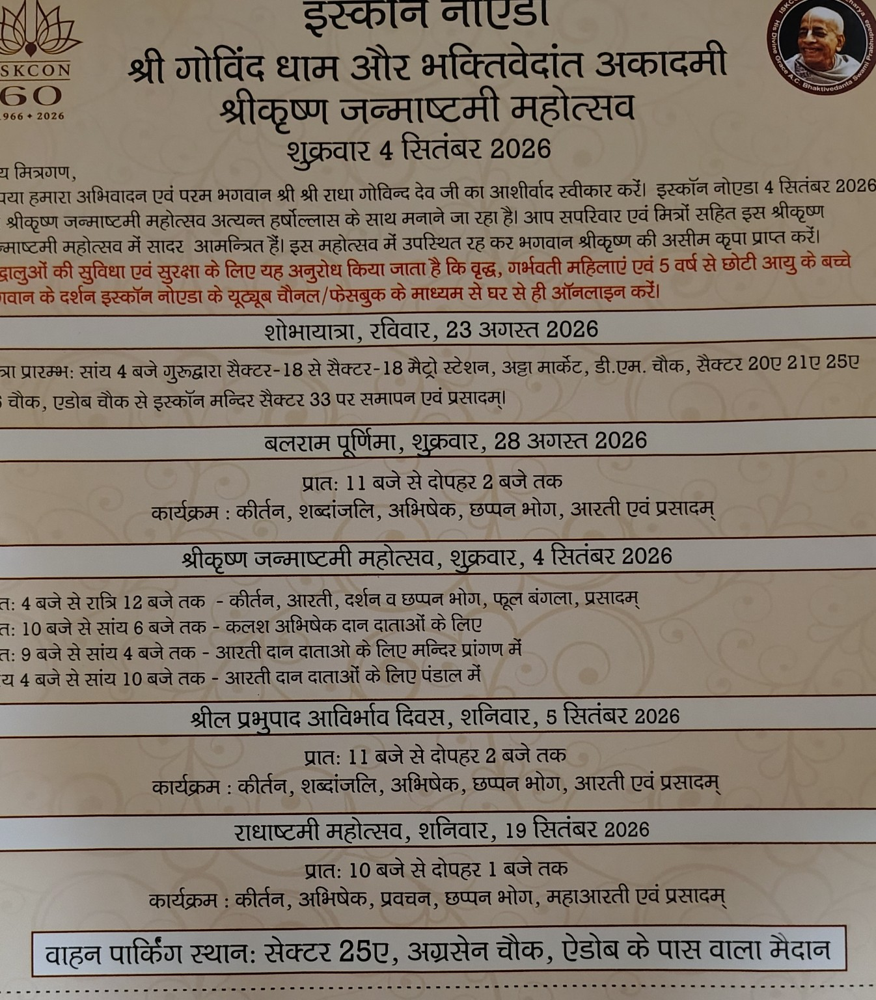

Save the dates and join the celebrations.
4:00 PM onwards • Procession begins from Gurudwara, Sector 18 and concludes at ISKCON Noida, Sector 33, followed by prasadam.
11:00 AM – 2:00 PM • Kirtan, Shabdanjali, Abhishek, Chhappan Bhog, Aarti & Prasadam.
4:00 PM – 12:00 AM: Kirtan, Aarti, Darshan, Chhappan Bhog, Phool Bangla & Prasadam.
10:00 AM – 6:00 PM: Kalash Abhishek for designated donors.
9:00 AM – 4:00 PM: Aarti for designated donors in temple premises.
4:00 PM – 10:00 PM: Aarti for designated donors in the pandal.
11:00 AM – 2:00 PM • Kirtan, Shabdanjali, Abhishek, Chhappan Bhog, Aarti & Prasadam.
10:00 AM – 1:00 PM • Kirtan, Abhishek, Pravachan, Chhappan Bhog, Maha Aarti & Prasadam.
